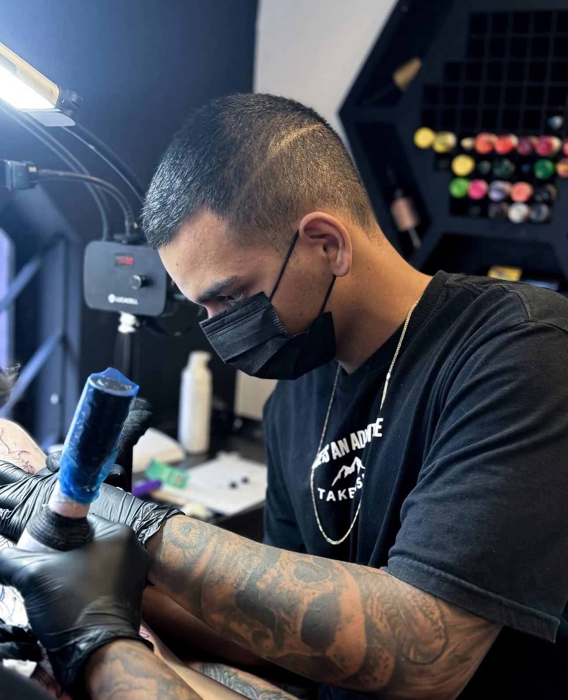

Projeto personalizado
Londrina, PR • Tatuagem autoral
Caio
Piccin
Tattoo
Tatuagens delicadas, florais e realistas criadas com atenção ao detalhe, encaixe no corpo e cuidado em cada etapa da experiência.

Artista / Tatuador
Trabalho focado em composição personalizada, precisão de linha, contraste e experiência segura.✦ Delicadas
✦ Florais
✦ Realistas
Sobre o artista
Arte feita com presença, técnica e cuidado.
Caio Piccin é tatuador em Londrina/PR e desenvolve trabalhos que unem desenho, técnica e escuta. Cada projeto começa pela ideia do cliente e passa por uma leitura cuidadosa de estilo, tamanho, local do corpo e intenção visual.
Sua atuação transita entre tatuagens delicadas, florais e realistas, sempre buscando acabamento limpo, composição equilibrada e uma experiência tranquila dentro do estúdio. Mais do que aplicar uma imagem na pele, o objetivo é construir uma arte que faça sentido para quem vai carregá-la.
Do orçamento à cicatrização, o atendimento prioriza clareza, biossegurança e orientação. A conversa inicial ajuda a transformar referências em uma proposta personalizada, respeitando anatomia, contraste, leitura futura e durabilidade.
Biossegurança em todas as etapas
Orientação de cuidados
Galeria de arte
Portfólio dividido por estilos.
Trabalhos selecionados para mostrar acabamento, encaixe no corpo e coerência de traço em cada proposta.
Cuidados e biossegurança
Sua tattoo começa antes da agulha e continua na cicatrização.
Uma tatuagem bonita depende de técnica, ambiente seguro e cuidados corretos. No atendimento, Caio orienta cada cliente para chegar preparado e cuidar bem da pele nos dias seguintes.
Antes da sessão
Durma bem, hidrate-se, alimente-se antes do horário e evite álcool nas 24 horas anteriores.
No estúdio
Materiais descartáveis, área preparada, orientação clara e atenção ao conforto durante o procedimento.
Primeiros dias
Higienize conforme orientação, evite coçar, piscina, sol direto e atrito excessivo na região.
Cicatrização
Use o produto indicado, observe a pele e tire dúvidas pelo WhatsApp se notar qualquer alteração fora do esperado.
Solicite um orçamento
Vamos transformar sua ideia em pele.
Envie uma descrição, referências, local do corpo e tamanho aproximado. O formulário direciona sua mensagem para o WhatsApp do Caio.